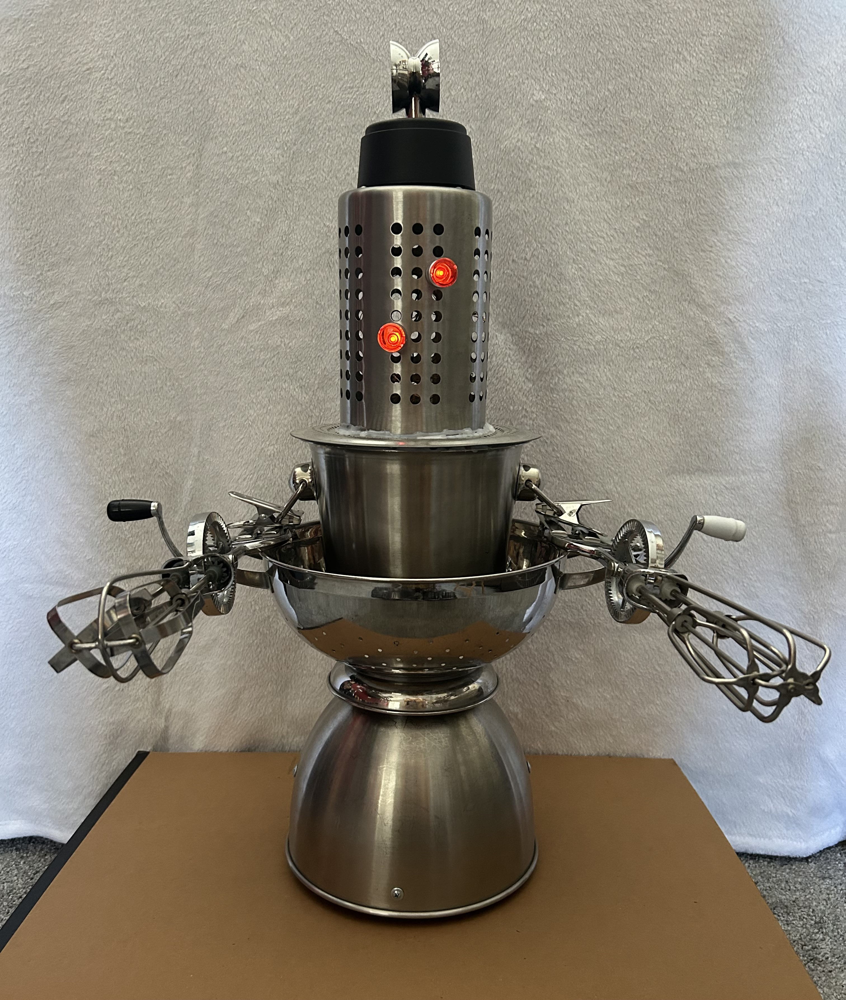
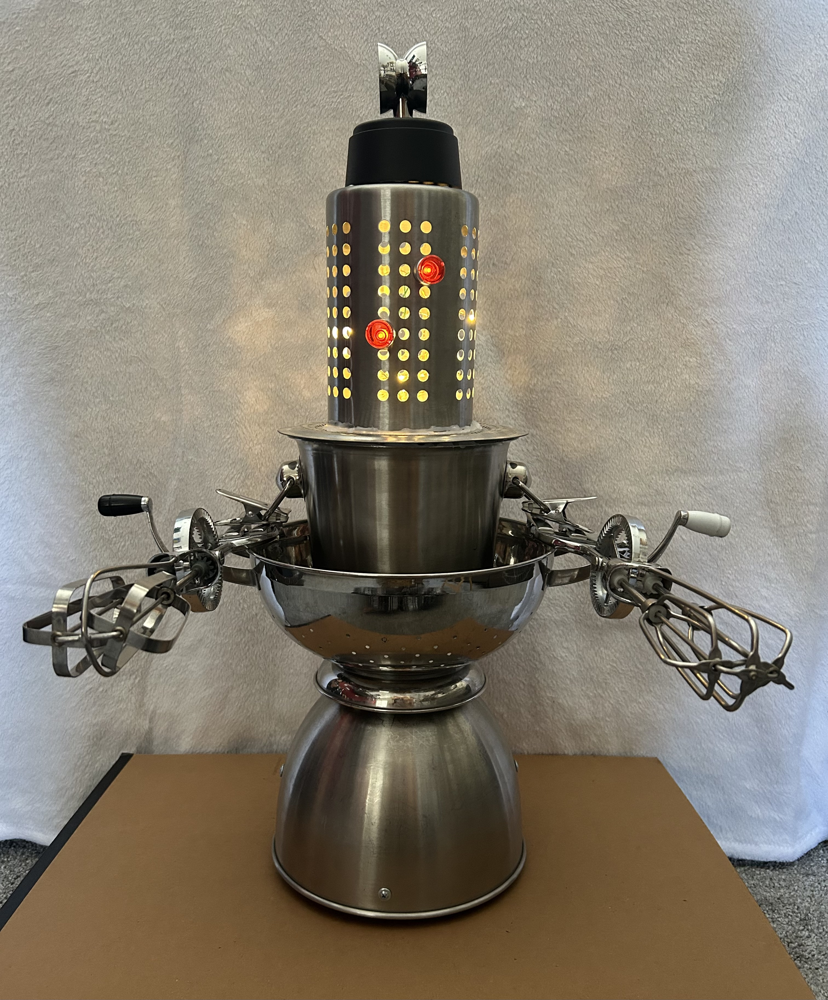
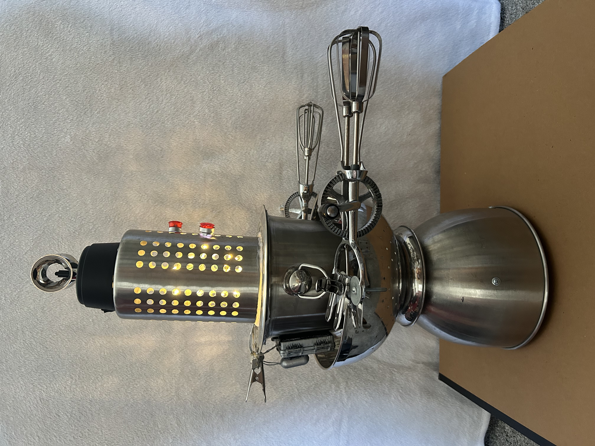

“The Egg-Buster” is a sculpture created from a collection of different metal objects found at a thrift store. The piece combines reused materials and mechanical forms to create an industrial-looking artwork with a handmade aesthetic. By assembling discarded metals together, the sculpture transforms ordinary objects into something expressive and experimental.
Back